Utility functions¶
This page lists functions that perform basic operations on numbers or aid general programming.
Conversion and printing¶
mpmathify() / convert()¶
- mpmath.mpmathify(x, strings=True)¶
Converts x to an mpf or mpc. If x is of type mpf, mpc, int, float, complex, the conversion will be performed losslessly.
If x is a string, the result will be rounded to the present working precision. Strings representing fractions or complex numbers are permitted.
>>> from mpmath import * >>> mp.dps = 15; mp.pretty = False >>> mpmathify(3.5) mpf('3.5') >>> mpmathify('2.1') mpf('2.1000000000000001') >>> mpmathify('3/4') mpf('0.75') >>> mpmathify('2+3j') mpc(real='2.0', imag='3.0')
nstr()¶
- mpmath.nstr(x, n=6, **kwargs)¶
Convert an mpf or mpc to a decimal string literal with n significant digits. The small default value for n is chosen to make this function useful for printing collections of numbers (lists, matrices, etc).
If x is a list or tuple, nstr() is applied recursively to each element. For unrecognized classes, nstr() simply returns str(x).
The companion function nprint() prints the result instead of returning it.
>>> from mpmath import * >>> nstr([+pi, ldexp(1,-500)]) '[3.14159, 3.05494e-151]' >>> nprint([+pi, ldexp(1,-500)]) [3.14159, 3.05494e-151]
Arithmetic operations¶
See also mpmath.sqrt(), mpmath.exp() etc., listed in Powers and logarithms
fadd()¶
- mpmath.fadd(ctx, x, y, **kwargs)¶
Adds the numbers x and y, giving a floating-point result, optionally using a custom precision and rounding mode.
The default precision is the working precision of the context. You can specify a custom precision in bits by passing the prec keyword argument, or by providing an equivalent decimal precision with the dps keyword argument. If the precision is set to +inf, or if the flag exact=True is passed, an exact addition with no rounding is performed.
When the precision is finite, the optional rounding keyword argument specifies the direction of rounding. Valid options are 'n' for nearest (default), 'f' for floor, 'c' for ceiling, 'd' for down, 'u' for up.
Examples
Using fadd() with precision and rounding control:
>>> from mpmath import * >>> mp.dps = 15; mp.pretty = False >>> fadd(2, 1e-20) mpf('2.0') >>> fadd(2, 1e-20, rounding='u') mpf('2.0000000000000004') >>> nprint(fadd(2, 1e-20, prec=100), 25) 2.00000000000000000001 >>> nprint(fadd(2, 1e-20, dps=15), 25) 2.0 >>> nprint(fadd(2, 1e-20, dps=25), 25) 2.00000000000000000001 >>> nprint(fadd(2, 1e-20, exact=True), 25) 2.00000000000000000001
Exact addition avoids cancellation errors, enforcing familiar laws of numbers such as
 , which don’t hold in floating-point
arithmetic with finite precision:
, which don’t hold in floating-point
arithmetic with finite precision:>>> x, y = mpf(2), mpf('1e-1000') >>> print x + y - x 0.0 >>> print fadd(x, y, prec=inf) - x 1.0e-1000 >>> print fadd(x, y, exact=True) - x 1.0e-1000
Exact addition can be inefficient and may be impossible to perform with large magnitude differences:
>>> fadd(1, '1e-100000000000000000000', prec=inf) Traceback (most recent call last): ... OverflowError: the exact result does not fit in memory
fsub()¶
- mpmath.fsub(ctx, x, y, **kwargs)¶
Subtracts the numbers x and y, giving a floating-point result, optionally using a custom precision and rounding mode.
See the documentation of fadd() for a detailed description of how to specify precision and rounding.
Examples
Using fsub() with precision and rounding control:
>>> from mpmath import * >>> mp.dps = 15; mp.pretty = False >>> fsub(2, 1e-20) mpf('2.0') >>> fsub(2, 1e-20, rounding='d') mpf('1.9999999999999998') >>> nprint(fsub(2, 1e-20, prec=100), 25) 1.99999999999999999999 >>> nprint(fsub(2, 1e-20, dps=15), 25) 2.0 >>> nprint(fsub(2, 1e-20, dps=25), 25) 1.99999999999999999999 >>> nprint(fsub(2, 1e-20, exact=True), 25) 1.99999999999999999999
Exact subtraction avoids cancellation errors, enforcing familiar laws of numbers such as
 , which don’t hold in floating-point
arithmetic with finite precision:
, which don’t hold in floating-point
arithmetic with finite precision:>>> x, y = mpf(2), mpf('1e1000') >>> print x - y + y 0.0 >>> print fsub(x, y, prec=inf) + y 2.0 >>> print fsub(x, y, exact=True) + y 2.0
Exact addition can be inefficient and may be impossible to perform with large magnitude differences:
>>> fsub(1, '1e-100000000000000000000', prec=inf) Traceback (most recent call last): ... OverflowError: the exact result does not fit in memory
fneg()¶
- mpmath.fneg(ctx, x, **kwargs)¶
Negates the number x, giving a floating-point result, optionally using a custom precision and rounding mode.
See the documentation of fadd() for a detailed description of how to specify precision and rounding.
Examples
An mpmath number is returned:
>>> from mpmath import * >>> mp.dps = 15; mp.pretty = False >>> fneg(2.5) mpf('-2.5') >>> fneg(-5+2j) mpc(real='5.0', imag='-2.0')
Precise control over rounding is possible:
>>> x = fadd(2, 1e-100, exact=True) >>> fneg(x) mpf('-2.0') >>> fneg(x, rounding='f') mpf('-2.0000000000000004')
Negating with and without roundoff:
>>> n = 200000000000000000000001 >>> print int(-mpf(n)) -200000000000000016777216 >>> print int(fneg(n)) -200000000000000016777216 >>> print int(fneg(n, prec=log(n,2)+1)) -200000000000000000000001 >>> print int(fneg(n, dps=log(n,10)+1)) -200000000000000000000001 >>> print int(fneg(n, prec=inf)) -200000000000000000000001 >>> print int(fneg(n, dps=inf)) -200000000000000000000001 >>> print int(fneg(n, exact=True)) -200000000000000000000001
fmul()¶
- mpmath.fmul(ctx, x, y, **kwargs)¶
Multiplies the numbers x and y, giving a floating-point result, optionally using a custom precision and rounding mode.
See the documentation of fadd() for a detailed description of how to specify precision and rounding.
Examples
The result is an mpmath number:
>>> from mpmath import * >>> mp.dps = 15; mp.pretty = False >>> fmul(2, 5.0) mpf('10.0') >>> fmul(0.5j, 0.5) mpc(real='0.0', imag='0.25')
Avoiding roundoff:
>>> x, y = 10**10+1, 10**15+1 >>> print x*y 10000000001000010000000001 >>> print mpf(x) * mpf(y) 1.0000000001e+25 >>> print int(mpf(x) * mpf(y)) 10000000001000011026399232 >>> print int(fmul(x, y)) 10000000001000011026399232 >>> print int(fmul(x, y, dps=25)) 10000000001000010000000001 >>> print int(fmul(x, y, exact=True)) 10000000001000010000000001
Exact multiplication with complex numbers can be inefficient and may be impossible to perform with large magnitude differences between real and imaginary parts:
>>> x = 1+2j >>> y = mpc(2, '1e-100000000000000000000') >>> fmul(x, y) mpc(real='2.0', imag='4.0') >>> fmul(x, y, rounding='u') mpc(real='2.0', imag='4.0000000000000009') >>> fmul(x, y, exact=True) Traceback (most recent call last): ... OverflowError: the exact result does not fit in memory
fdiv()¶
- mpmath.fdiv(ctx, x, y, **kwargs)¶
Divides the numbers x and y, giving a floating-point result, optionally using a custom precision and rounding mode.
See the documentation of fadd() for a detailed description of how to specify precision and rounding.
Examples
The result is an mpmath number:
>>> from mpmath import * >>> mp.dps = 15; mp.pretty = False >>> fdiv(3, 2) mpf('1.5') >>> fdiv(2, 3) mpf('0.66666666666666663') >>> fdiv(2+4j, 0.5) mpc(real='4.0', imag='8.0')
The rounding direction and precision can be controlled:
>>> fdiv(2, 3, dps=3) # Should be accurate to at least 3 digits mpf('0.6666259765625') >>> fdiv(2, 3, rounding='d') mpf('0.66666666666666663') >>> fdiv(2, 3, prec=60) mpf('0.66666666666666667') >>> fdiv(2, 3, rounding='u') mpf('0.66666666666666674')
Checking the error of a division by performing it at higher precision:
>>> fdiv(2, 3) - fdiv(2, 3, prec=100) mpf('-3.7007434154172148e-17')
Unlike fadd(), fmul(), etc., exact division is not allowed since the quotient of two floating-point numbers generally does not have an exact floating-point representation. (In the future this might be changed to allow the case where the division is actually exact.)
>>> fdiv(2, 3, exact=True) Traceback (most recent call last): ... ValueError: division is not an exact operation
fmod()¶
 to mpmath numbers and returns
to mpmath numbers and returns  .
For mpmath numbers, this is equivalent to
.
For mpmath numbers, this is equivalent to fsum()¶
- mpmath.fsum(terms, absolute=False, squared=False)¶
Calculates a sum containing a finite number of terms (for infinite series, see nsum()). The terms will be converted to mpmath numbers. For len(terms) > 2, this function is generally faster and produces more accurate results than the builtin Python function sum().
>>> from mpmath import * >>> mp.dps = 15; mp.pretty = False >>> fsum([1, 2, 0.5, 7]) mpf('10.5')
With squared=True each term is squared, and with absolute=True the absolute value of each term is used.
fprod()¶
fdot()¶
- mpmath.fdot(A, B=None, conjugate=False)¶
Computes the dot product of the iterables
 and 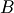,
and 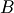,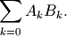
Alternatively, fdot() accepts a single iterable of pairs. In other words, fdot(A,B) and fdot(zip(A,B)) are equivalent. The elements are automatically converted to mpmath numbers.
With conjugate=True, the elements in the second vector will be conjugated:
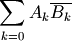
Examples
>>> from mpmath import * >>> mp.dps = 15; mp.pretty = False >>> A = [2, 1.5, 3] >>> B = [1, -1, 2] >>> fdot(A, B) mpf('6.5') >>> zip(A, B) [(2, 1), (1.5, -1), (3, 2)] >>> fdot(_) mpf('6.5') >>> A = [2, 1.5, 3j] >>> B = [1+j, 3, -1-j] >>> fdot(A, B) mpc(real='9.5', imag='-1.0') >>> fdot(A, B, conjugate=True) mpc(real='3.5', imag='-5.0')
Complex components¶
fabs()¶
 . Unlike
. Unlike sign()¶
- mpmath.sign(x)¶
Returns the sign of
 , defined as 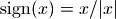
(with the special case 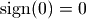):
, defined as 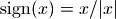
(with the special case 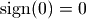):>>> from mpmath import * >>> mp.dps = 15; mp.pretty = False >>> sign(10) mpf('1.0') >>> sign(-10) mpf('-1.0') >>> sign(0) mpf('0.0')
Note that the sign function is also defined for complex numbers, for which it gives the projection onto the unit circle:
>>> mp.dps = 15; mp.pretty = True >>> sign(1+j) (0.707106781186547 + 0.707106781186547j)
re()¶
 . Unlike
. Unlike im()¶
 . Unlike
. Unlike arg()¶
- mpmath.arg(x)¶
Computes the complex argument (phase) of
, defined as the
signed angle between the positive real axis and in the
complex plane:>>> from mpmath import * >>> mp.dps = 15; mp.pretty = True >>> arg(3) 0.0 >>> arg(3+3j) 0.785398163397448 >>> arg(3j) 1.5707963267949 >>> arg(-3) 3.14159265358979 >>> arg(-3j) -1.5707963267949
The angle is defined to satisfy
 and
with the sign convention that a nonnegative imaginary part
results in a nonnegative argument.
and
with the sign convention that a nonnegative imaginary part
results in a nonnegative argument.The value returned by arg() is an mpf instance.
conj()¶
 . Unlike
. Unlike
 as a pair 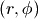 such that 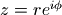:
as a pair 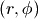 such that 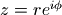:Integer and fractional parts¶
floor()¶
- mpmath.floor(x)¶
Computes the floor of
,  , defined as
the largest integer less than or equal to :
, defined as
the largest integer less than or equal to :>>> from mpmath import * >>> mp.pretty = False >>> floor(3.5) mpf('3.0')
Note
floor(), ceil() and nint() return a floating-point number, not a Python int. If
is
too large to be represented exactly at the present working precision,
the result will be rounded, not necessarily in the direction
implied by the mathematical definition of the function.To avoid rounding, use prec=0:
>>> mp.dps = 15 >>> int(floor(10**30+1)) 1000000000000000019884624838656L >>> int(floor(10**30+1, prec=0)) 1000000000000000000000000000001L
The floor function is defined for complex numbers and acts on the real and imaginary parts separately:
>>> floor(3.25+4.75j) mpc(real='3.0', imag='4.0')
ceil()¶
- mpmath.ceil(x)¶
Computes the ceiling of
,  , defined as
the smallest integer greater than or equal to :
, defined as
the smallest integer greater than or equal to :>>> from mpmath import * >>> mp.pretty = False >>> ceil(3.5) mpf('4.0')
The ceiling function is defined for complex numbers and acts on the real and imaginary parts separately:
>>> ceil(3.25+4.75j) mpc(real='4.0', imag='5.0')
See notes about rounding for floor().
nint()¶
- mpmath.nint(x)¶
Evaluates the nearest integer function, 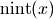. This gives the nearest integer to
; on a tie, it
gives the nearest even integer:>>> from mpmath import * >>> mp.pretty = False >>> nint(3.2) mpf('3.0') >>> nint(3.8) mpf('4.0') >>> nint(3.5) mpf('4.0') >>> nint(4.5) mpf('4.0')
The nearest integer function is defined for complex numbers and acts on the real and imaginary parts separately:
>>> nint(3.25+4.75j) mpc(real='3.0', imag='5.0')
See notes about rounding for floor().
frac()¶
- mpmath.frac(x)¶
Gives the fractional part of
, defined as
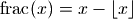 (see floor()).
In effect, this computes modulo 1, or 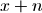 where
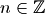 is such that 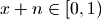:>>> from mpmath import * >>> mp.pretty = False >>> frac(1.25) mpf('0.25') >>> frac(3) mpf('0.0') >>> frac(-1.25) mpf('0.75')
For a complex number, the fractional part function applies to the real and imaginary parts separately:
>>> frac(2.25+3.75j) mpc(real='0.25', imag='0.75')
Plotted, the fractional part function gives a sawtooth wave. The Fourier series coefficients have a simple form:
>>> mp.dps = 15 >>> nprint(fourier(lambda x: frac(x)-0.5, [0,1], 4)) ([0.0, 0.0, 0.0, 0.0, 0.0], [0.0, -0.31831, -0.159155, -0.106103, -0.0795775]) >>> nprint([-1/(pi*k) for k in range(1,5)]) [-0.31831, -0.159155, -0.106103, -0.0795775]
Note
The fractional part is sometimes defined as a symmetric function, i.e. returning 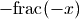 if
 .
This convention is used, for instance, by Mathematica’s
FractionalPart.
.
This convention is used, for instance, by Mathematica’s
FractionalPart.
Tolerances and approximate comparisons¶
chop()¶
- mpmath.chop(x, tol=None)¶
Chops off small real or imaginary parts, or converts numbers close to zero to exact zeros. The input can be a single number or an iterable:
>>> from mpmath import * >>> mp.dps = 15; mp.pretty = False >>> chop(5+1e-10j, tol=1e-9) mpf('5.0') >>> nprint(chop([1.0, 1e-20, 3+1e-18j, -4, 2])) [1.0, 0.0, 3.0, -4.0, 2.0]
The tolerance defaults to 100*eps.
almosteq()¶
- mpmath.almosteq(s, t, rel_eps=None, abs_eps=None)¶
Determine whether the difference between
 and
and  is smaller
than a given epsilon, either relatively or absolutely.
is smaller
than a given epsilon, either relatively or absolutely.Both a maximum relative difference and a maximum difference (‘epsilons’) may be specified. The absolute difference is defined as 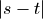 and the relative difference is defined as 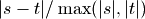.
If only one epsilon is given, both are set to the same value. If none is given, both epsilons are set to 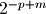 where
 is the current working precision and
is the current working precision and  is a small
integer. The default setting typically allows almosteq()
to be used to check for mathematical equality
in the presence of small rounding errors.
is a small
integer. The default setting typically allows almosteq()
to be used to check for mathematical equality
in the presence of small rounding errors.Examples
>>> from mpmath import * >>> mp.dps = 15 >>> almosteq(3.141592653589793, 3.141592653589790) True >>> almosteq(3.141592653589793, 3.141592653589700) False >>> almosteq(3.141592653589793, 3.141592653589700, 1e-10) True >>> almosteq(1e-20, 2e-20) True >>> almosteq(1e-20, 2e-20, rel_eps=0, abs_eps=0) False
Properties of numbers¶
isinf()¶
- mpmath.isinf(x)¶
Return True if the absolute value of x is infinite; otherwise return False:
>>> from mpmath import * >>> isinf(inf) True >>> isinf(-inf) True >>> isinf(3) False >>> isinf(3+4j) False >>> isinf(mpc(3,inf)) True >>> isinf(mpc(inf,3)) True
isnan()¶
- mpmath.isnan(x)¶
Return True if x is a NaN (not-a-number), or for a complex number, whether either the real or complex part is NaN; otherwise return False:
>>> from mpmath import * >>> isnan(3.14) False >>> isnan(nan) True >>> isnan(mpc(3.14,2.72)) False >>> isnan(mpc(3.14,nan)) True
isnormal()¶
- mpmath.isnormal(x)¶
Determine whether x is “normal” in the sense of floating-point representation; that is, return False if x is zero, an infinity or NaN; otherwise return True. By extension, a complex number x is considered “normal” if its magnitude is normal:
>>> from mpmath import * >>> isnormal(3) True >>> isnormal(0) False >>> isnormal(inf); isnormal(-inf); isnormal(nan) False False False >>> isnormal(0+0j) False >>> isnormal(0+3j) True >>> isnormal(mpc(2,nan)) False
isint()¶
- mpmath.isint(x, gaussian=False)¶
Return True if x is integer-valued; otherwise return False:
>>> from mpmath import * >>> isint(3) True >>> isint(mpf(3)) True >>> isint(3.2) False >>> isint(inf) False
Optionally, Gaussian integers can be checked for:
>>> isint(3+0j) True >>> isint(3+2j) False >>> isint(3+2j, gaussian=True) True
ldexp()¶
- mpmath.ldexp(x, n)¶
Computes
 efficiently. No rounding is performed.
The argument must be a real floating-point number (or
possible to convert into one) and
efficiently. No rounding is performed.
The argument must be a real floating-point number (or
possible to convert into one) and  must be a Python int.
must be a Python int.>>> from mpmath import * >>> mp.dps = 15; mp.pretty = False >>> ldexp(1, 10) mpf('1024.0') >>> ldexp(1, -3) mpf('0.125')
frexp()¶
- mpmath.frexp(x, n)¶
Given a real number
, returns  with
with  ,
a Python integer, and such that
,
a Python integer, and such that  . No rounding is
performed.
. No rounding is
performed.>>> from mpmath import * >>> mp.dps = 15; mp.pretty = False >>> frexp(7.5) (mpf('0.9375'), 3)
mag()¶
- mpmath.mag(x)¶
Quick logarithmic magnitude estimate of a number. Returns an integer or infinity
such that 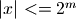. It is not
guaranteed that is an optimal bound, but it will never
be too large by more than 2 (and probably not more than 1).Examples
>>> from mpmath import * >>> mp.pretty = True >>> mag(10), mag(10.0), mag(mpf(10)), int(ceil(log(10,2))) (4, 4, 4, 4) >>> mag(10j), mag(10+10j) (4, 5) >>> mag(0.01), int(ceil(log(0.01,2))) (-6, -6) >>> mag(0), mag(inf), mag(-inf), mag(nan) (-inf, +inf, +inf, nan)
nint_distance()¶
- mpmath.nint_distance(x)¶
Return 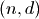 where
is the nearest integer to and 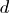 is
an estimate of 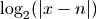. If 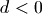, 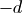 gives the precision
(measured in bits) lost to cancellation when computing 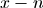.>>> from mpmath import * >>> n, d = nint_distance(5) >>> print n, d 5 -inf >>> n, d = nint_distance(mpf(5)) >>> print n, d 5 -inf >>> n, d = nint_distance(mpf(5.00000001)) >>> print n, d 5 -26 >>> n, d = nint_distance(mpf(4.99999999)) >>> print n, d 5 -26 >>> n, d = nint_distance(mpc(5,10)) >>> print n, d 5 4 >>> n, d = nint_distance(mpc(5,0.000001)) >>> print n, d 5 -19
Number generation¶
fraction()¶
- mpmath.fraction(p, q)¶
Given Python integers
 , returns a lazy mpf representing
the fraction 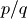. The value is updated with the precision.
, returns a lazy mpf representing
the fraction 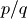. The value is updated with the precision.>>> from mpmath import * >>> mp.dps = 15 >>> a = fraction(1,100) >>> b = mpf(1)/100 >>> print a; print b 0.01 0.01 >>> mp.dps = 30 >>> print a; print b # a will be accurate 0.01 0.0100000000000000002081668171172 >>> mp.dps = 15
rand()¶
- mpmath.rand()¶
- Returns an mpf with value chosen randomly from 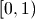. The number of randomly generated bits in the mantissa is equal to the working precision.
arange()¶
- mpmath.arange(*args)¶
This is a generalized version of Python’s range() function that accepts fractional endpoints and step sizes and returns a list of mpf instances. Like range(), arange() can be called with 1, 2 or 3 arguments:
- arange(b)
- 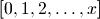
- arange(a, b)
- 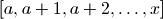
- arange(a, b, h)
- 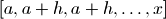
where 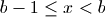 (in the third case, 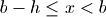).
Like Python’s range(), the endpoint is not included. To produce ranges where the endpoint is included, linspace() is more convenient.
Examples
>>> from mpmath import * >>> mp.dps = 15; mp.pretty = False >>> arange(4) [mpf('0.0'), mpf('1.0'), mpf('2.0'), mpf('3.0')] >>> arange(1, 2, 0.25) [mpf('1.0'), mpf('1.25'), mpf('1.5'), mpf('1.75')] >>> arange(1, -1, -0.75) [mpf('1.0'), mpf('0.25'), mpf('-0.5')]
linspace()¶
- mpmath.linspace(*args, **kwargs)¶
linspace(a, b, n) returns a list of
evenly spaced
samples from  to
to  . The syntax linspace(mpi(a,b), n)
is also valid.
. The syntax linspace(mpi(a,b), n)
is also valid.This function is often more convenient than arange() for partitioning an interval into subintervals, since the endpoint is included:
>>> from mpmath import * >>> mp.dps = 15; mp.pretty = False >>> linspace(1, 4, 4) [mpf('1.0'), mpf('2.0'), mpf('3.0'), mpf('4.0')]
You may also provide the keyword argument endpoint=False:
>>> linspace(1, 4, 4, endpoint=False) [mpf('1.0'), mpf('1.75'), mpf('2.5'), mpf('3.25')]
Precision management¶
autoprec()¶
- mpmath.autoprec(ctx, f, maxprec=None, catch=(), verbose=False)¶
Return a wrapped copy of f that repeatedly evaluates f with increasing precision until the result converges to the full precision used at the point of the call.
This heuristically protects against rounding errors, at the cost of roughly a 2x slowdown compared to manually setting the optimal precision. This method can, however, easily be fooled if the results from f depend “discontinuously” on the precision, for instance if catastrophic cancellation can occur. Therefore, autoprec() should be used judiciously.
Examples
Many functions are sensitive to perturbations of the input arguments. If the arguments are decimal numbers, they may have to be converted to binary at a much higher precision. If the amount of required extra precision is unknown, autoprec() is convenient:
>>> from mpmath import * >>> mp.dps = 15 >>> mp.pretty = True >>> besselj(5, 125 * 10**28) # Exact input -8.03284785591801e-17 >>> besselj(5, '1.25e30') # Bad 7.12954868316652e-16 >>> autoprec(besselj)(5, '1.25e30') # Good -8.03284785591801e-17
The following fails to converge because 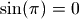 whereas all finite-precision approximations of
 give nonzero values:
give nonzero values:>>> autoprec(sin)(pi) Traceback (most recent call last): ... NoConvergence: autoprec: prec increased to 2910 without convergence
As the following example shows, autoprec() can protect against cancellation, but is fooled by too severe cancellation:
>>> x = 1e-10 >>> exp(x)-1; expm1(x); autoprec(lambda t: exp(t)-1)(x) 1.00000008274037e-10 1.00000000005e-10 1.00000000005e-10 >>> x = 1e-50 >>> exp(x)-1; expm1(x); autoprec(lambda t: exp(t)-1)(x) 0.0 1.0e-50 0.0
With catch, an exception or list of exceptions to intercept may be specified. The raised exception is interpreted as signaling insufficient precision. This permits, for example, evaluating a function where a too low precision results in a division by zero:
>>> f = lambda x: 1/(exp(x)-1) >>> f(1e-30) Traceback (most recent call last): ... ZeroDivisionError >>> autoprec(f, catch=ZeroDivisionError)(1e-30) 1.0e+30
workprec()¶
- mpmath.workprec(ctx, n, normalize_output=False)¶
The block
- with workprec(n):
- <code>
sets the precision to n bits, executes <code>, and then restores the precision.
workprec(n)(f) returns a decorated version of the function f that sets the precision to n bits before execution, and restores the precision afterwards. With normalize_output=True, it rounds the return value to the parent precision.
workdps()¶
- mpmath.workdps(ctx, n, normalize_output=False)¶
- This function is analogous to workprec (see documentation) but changes the decimal precision instead of the number of bits.
extraprec()¶
- mpmath.extraprec(ctx, n, normalize_output=False)¶
The block
- with extraprec(n):
- <code>
increases the precision n bits, executes <code>, and then restores the precision.
extraprec(n)(f) returns a decorated version of the function f that increases the working precision by n bits before execution, and restores the parent precision afterwards. With normalize_output=True, it rounds the return value to the parent precision.
Performance and debugging¶
memoize()¶
- mpmath.memoize(ctx, f)¶
Return a wrapped copy of f that caches computed values, i.e. a memoized copy of f. Values are only reused if the cached precision is equal to or higher than the working precision:
>>> from mpmath import * >>> mp.dps = 15; mp.pretty = True >>> f = memoize(maxcalls(sin, 1)) >>> f(2) 0.909297426825682 >>> f(2) 0.909297426825682 >>> mp.dps = 25 >>> f(2) Traceback (most recent call last): ... NoConvergence: maxcalls: function evaluated 1 times
maxcalls()¶
- mpmath.maxcalls(ctx, f, N)¶
Return a wrapped copy of f that raises NoConvergence when f has been called more than N times:
>>> from mpmath import * >>> mp.dps = 15 >>> f = maxcalls(sin, 10) >>> print sum(f(n) for n in range(10)) 1.95520948210738 >>> f(10) Traceback (most recent call last): ... NoConvergence: maxcalls: function evaluated 10 times
monitor()¶
- mpmath.monitor(f, input='print', output='print')¶
Returns a wrapped copy of f that monitors evaluation by calling input with every input (args, kwargs) passed to f and output with every value returned from f. The default action (specify using the special string value 'print') is to print inputs and outputs to stdout, along with the total evaluation count:
>>> from mpmath import * >>> mp.dps = 5; mp.pretty = False >>> diff(monitor(exp), 1) # diff will eval f(x-h) and f(x+h) in 0 (mpf('0.99999999906867742538452148'),) {} out 0 mpf('2.7182818259274480055282064') in 1 (mpf('1.0000000009313225746154785'),) {} out 1 mpf('2.7182818309906424675501024') mpf('2.7182808')
To disable either the input or the output handler, you may pass None as argument.
Custom input and output handlers may be used e.g. to store results for later analysis:
>>> mp.dps = 15 >>> input = [] >>> output = [] >>> findroot(monitor(sin, input.append, output.append), 3.0) mpf('3.1415926535897932') >>> len(input) # Count number of evaluations 9 >>> print input[3], output[3] ((mpf('3.1415076583334066'),), {}) 8.49952562843408e-5 >>> print input[4], output[4] ((mpf('3.1415928201669122'),), {}) -1.66577118985331e-7